Chapter 4 Week 4
4.1 Learning outcomes
We as researchers all start off with a general area that we’re interested in. As someone studying Criminology, you are likely to be interested in Criminology-related topics. You might want to learn about policing, or criminal justice practices, or you might be interested in something like situational crime prevention. These are very broad interests that you may have, and within these there are many many sub-topics, and potentially research questions that you might want to explore. During the research process, the researcher becomes an expert in his or her field and the methods and techniques to be used for research. The researcher goes through several stages and must deal with the concept of variable and the assumption of its measurement.
So far in this course we have always started with our variables. We obtain a data set which has variables that measure the things that we are interested in. The police.uk data has crime records, that we can use to explore difference in volume of different crim types, or difference in number of crimes between neighbourhoods, or potentially look at home crime rates change over time, with seasons for example. Or with the arrestee survey we saw variables that related to people’s experiences with their arrests, and in the business victimisation survey with businesse’s experiences of victimisation, and their perceptions of safety, as well as the precautions they take, measured in terms of their spending on IT security for example.
In all these cases, we were presented with a set of variables, but without having much say in how the variables are defined in terms of representing the concepts that we want to be able to talk about when making sense of our data. A variable is a structure of characteristics, qualities, or quantities that in some form provide information about a specific descriptive phenomenon. Information that is provided by variables that are under study is fundamental for the researcher and data analyst. However, this information and its quality will depend on how variables are quantified and on the quality of its measurements. In all these cases we started with the data, but actually, most of the time, you are much more likely to start with the research questions you’re answering. As a researcher you are interested to learn more about your chosen topic. Whether that’s drugs, probation, stop and search practices of the police, online cryptomarkets, fear of crime, transport crime, police use of twitter, hate crimes, whatever it is, you want to focus on exploring your topic. You can explore these topics through data, if you can collect data, or data is already available for you to analyse. But how do you go from research topics and ideas and questions to actual variables? Well this is what we will learn today.
Also we will discuss the manner in which you can collect these variables about a sample of people who represent the population in which you are interested. The term “population” is used in statistics to represent all possible measurements or outcomes that are of interest to us in a particular study. On the other hand, the term “sample” refers to a portion of the population that is representative of the population from which it was selected. The sample is the set of people from whom you take measurements. Everyone in your sample has one row that represents them in your data set. For example, in the arrestee survey used last week, every person arrested was a part of the sample, of people interviewed. Then, the results of any data analysis based on this sample can be used to make inferences about the population of all people arrested, if this sample was representative.
This distinction might seem intuitive, but whether we’re talking about our population or our sample when discussing our data, as well as whether we refer to sample statistics or population parameters will also surface as important in this week’s material.
4.1.1 Terms for today:
- Sample and population
- Conceptualisation
- Operationalisation
- Measurement
- Constructs and composite variables
- Multi-item scales
- Reliability and validity (round 2)
- Recoding
4.2 Population parameters versus sample statistics
Hold on a second! Population standard deviation? But so far we have only been talking about samples? Well, this week we also discuss sampling, right? And the differences between sample statistics and population parameters. A statistic and a parameter are very similar. They are both descriptions of groups, like “50% of dog owners prefer X Brand dog food.” The difference between a statistic and a parameter is that statistics describe a sample. A parameter describes an entire population. (You might recall this from week 1 readings.)
For example, say you want to know the mean income of the subscribers to a particular magazine—a parameter of a population. You draw a random sample of 100 subscribers and determine that their mean income is $27,500 (a statistic). You conclude that the population mean income μ is likely to be close to $27,500 as well. This example is one of statistical inference.
If you are taking the second term module, Modeling Criminological Data, you will be introduced to techniques for making statistical inference. But essentially it refers to any process where you draw conclusions about a population based on the data analysis you perform on a sample of that population. Because you’re using the statistics to make inferences, this process is called inferential statistics.
With inferential statistics, you are trying to reach conclusions that extend beyond the immediate data alone. For instance, we use inferential statistics to try to infer from the sample data what the population might think. Or, we use inferential statistics to make judgments of the probability that an observed difference between groups is a dependable one or one that might have happened by chance in this study. Thus, we use inferential statistics to make inferences from our data to more general conditions; we use descriptive statistics simply to describe what’s going on in our data.
Take the example of the Crime Survey for England and Wales. The Crime Survey for England and Wales has measured crime in since 1981. Used alongside police recorded crime data it is a valuable source of information for the government about the extent and nature of crime in England and Wales. The survey measures crime by asking members of the public, such as yourself, about their experiences of crime over the last 12 months. In this way the survey records all types of crimes experienced by people, including those crimes that may not have been reported to the police. It is important that we hear from people who have experienced crime and also those who have not experienced any crime in the last 12 months, so that we can show an accurate picture of crime in the country.
Each year around 50,000 households across England and Wales will be invited to participate in the survey. In previous years three quarters of households invited to take part agreed to participate. While this does encompass a lot of people, you can see how it’s not the entire population of England and Wales. Instead it is a representative sample.
While reporting sample statistics from the sample might be interesting (ie to talk about whether men or women have higher worry about crime), the more interesting approach is to make inferences about the population at large. Do men and women generally have different approached to fear of crime? In order to answer these questions, criminologists use *p-values and effect sizes to talk about the relationships between two variables in a population. Since in this course we mostly talk about the relationships between variables n a sample, we talk about the sample statistics. So you will learn about inferential statistics in the future. But for now it is important that you note this different between sample statistics and population parameters.
They even have different notation. For example, you would use x-bar (x̄) to talk about your sample mean, but mew (μ) to talk about your population mean. Similarly, you can calculate the standard deviation for your sample, or for your population. In each instance, you can measure each for your sample, and then infer it for your population. How do you do this? Well, you make use of something called the sampling distribution of the mean.
The mean of the sampling distribution of the mean is the mean of the population from which the scores were sampled. Therefore, if a population has a mean μ, then the mean of the sampling distribution of the mean is also μ. The symbol μM is used to refer to the mean of the sampling distribution of the mean.
4.2.1 Activity 1: Sample statistisc vs population parameters
Let’s explore this with some data. Download the heightsAndNames.xlsx file from Blackboard.
Open this data with Excel. You can see we have 3 variables. One variable is the people’s names, one is their height, and the third variable, I created, putting these people into 6 different samples, assigning them randomly. Let’s assume that everyone in this excel spreadsheet is our population. Everyone here is everyone who exists, these 300 people are the only people that exist in our population. Now let’s suppose that we don’t have all their heights. Let’s suppose that we do not have the budget to measure the height of all these 300 people, and instead we have to measure the height of a sample of 50 people.
Let’s say we initially select sample 1. You can filter to show only sample 1 in excel by using the “filter” option. Click on the data tab in excel, and the filter option (the little funnel icon):

When you click this, little downward arrows should appear next to the column names for each one of your variables. Click on the one next to the “sample” variable:
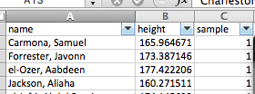
When you do this a little window will appear. In this window you will see all the possible values that the “sample” variable can take. In this case, it’s the numbers 1 through 6, as there are 6 possible samples of 50 people that we have, from these total population of 300 people. Everything that has a ticked box next to it will appear, while everything that does not will get filtered out.

Untick the box next to every single sample, except sample 1. Like so:

When you do this you should see in your data that all the other rows will disappear, and you will see only the ones where the value for the “sample” variable is “1”.
So now we have our first sample of our population. We have a sample of 50 people, and we use these 50 people to collect data. In this case, the data we collect is their heights. Let’s say we’re interested in their average height. We can get this, using the =AVERAGE() function in excel.
So let’s create a small table in another sheet in our excel spreadsheet, that calculated the average height for our sample 1. To do this, create a new sheet (by clicking on the little plus sign at the bottom of your excel page):

Then in this new sheet, create a cell for each sample, from sample 1 to sample 6. Like so:
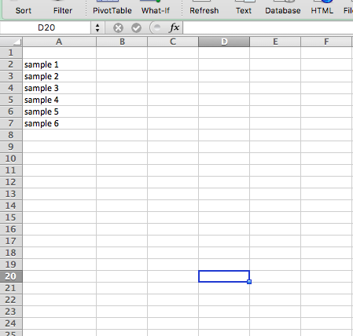
Then, in the cell next to the “sample 1” cell, enter the =AVERAGE() formula. Click inside the brackets, and go select the values for height, in your sample 1.

Repeat this for each one of the samples. So each time, go to the little down arrow next to the “Sample” column, select the next sample (so first 2, then 3, then 4, and so on), and each time, calculate the average height for the sample.
You should end up with the average height for 6 different samples of your 300 people:

Now this is interesting. Depending on which sample you end up with, you get a different sample statistic for the mean. With only one of the samples, you would use that sample statistic to make inferences about the population parameter. So if you ended up with sample 1, you would assume the average height is 169.7 centimetres. On the other hand, if you ended up with sample 5, you would say the average height is 173.1 centimetres.
Well, in our special case, we can know the population parameter. To get this, simply get rid of your filters, so you have all 300 observations, and get the average for these. I’ll let you figure out yourself how to do this. Add it as a row in our table of averages, under the “sample 6” average.
So… did you get it?
The average height for our population is about 172.1 centimetres. So our sample statistics are all sort of near this measure, but depending on which sample we end up with, we do better, or worse with getting near this number. Now I’m going to show you something neat.
Take the average of the averages. That’s right. What is the average of all 6 sample averages? You guessed it, it’s equal to our population average! It’s also about 172.1 centimetres. Now I cheated a bit here, because we have non-overlapping samples without replacement, so you do end up taking your population sample, but actually, if you repeatedly sampled from a population, over and over again, and then took the average height in each sample, and then finally, after infinitely many samples, you took the average of all of the averages, it would be equal to the population parameter.
This is something called the sampling distribution of the mean.
4.3 Central Limit Theorem
We will never have many many many samples of the same thing, right? Surveys are costly, and we are happy if we can run it once. So instead of running the same survey many many times on different samples of the population, we can rely on another mathematical rule, called the central limit theorem. The Central Limit Theorem states that the sampling distribution of the sampling means approaches a normal distribution as the sample size gets larger. The Central Limit Theorem tell us that as the sample size tends to infinity, the of the distribution of sample means approaches the normal distribution. This is a statement about the SHAPE of the distribution. A normal distribution is bell shaped so the shape of the distribution of sample means begins to look bell shaped as the sample size increases.
You can watch this video to learn about central limit theorem some more.
Further, something called the Law of Large Numbers tells us where the center (maximum point) of the bell is located. Again, as the sample size approaches infinity the center of the distribution of the sample means becomes very close to the population mean. Basically, it means that the larger our sample, to more we can trust that our sample statistic reflects the population parameter.
Give this a go in our heights data in excel. Let’s select a mega sample of 150 people. Let’s use odd numbered samples: 1, 3, and 5 to do this. Calculate the average height of all the people who are in these 3 samples. To do this, go back to your filtering, and make sure that the boxes next to 1, 3, and 5 are all ticked. Then calculate the average. Add this as a new row in your sheet where you’ve already calculated all the averages. Pretty close to our population mean, no?
Let’s try also for the even numbered samples, 2, 4, and 6. Add this as a new row as well. So? Close? I would say so:

If you’re still unsure, this video may help as well as this one.
This might not seem obvious at first, but really, it’s something that you probably already use in your everyday life. Think about when you are visiting a new city and you are looking to find a nice place to eat. You might use tripadvisor. Or yelp. In case you’re not familiar, these are review sites, where people can give a star rating (usually out of 5) to an establishment, and then others looking to visit these venues can see what ratings others have given them. You probably have used something like this, when you are exploring a new part of town, or in an area you might be unfamiliar with. And chances are, you refer to the law of large number when deciding where to eat. Take this example. You come across the below reviews:

and
You can see that actually review 1 has the higher mean score, right? It’s got a score of 5 stars, the maximum amount of stars which you can have. Compared to that, the restaurant in review 2 has only 4 stars. So based on this rating alone, and no additional information, your ideal option is to choose the restaurant in the first review, “Fantasy Manchester”. But you most likely wouldn’t. Chances are, if you were going by the rating information only, then you would be more likely to select the restaurant in the 2nd review, Little Yang Sing. And that is because of the number of reviews. With only 2 reviews for “Fantasy Manchester”, you cannot be certain that a diverse set of opinions is represented. It could be two people who are really biased for all you know, such as friends of the owner. On the other hand, you know that the 33 people who reviewed “Little Yang Sing” will represent enough variation that it might include some biased people, but on the whole will be a better representation of the experience that all diners have, and therefore a better indication of what your experience will be like. In other words, the sample statistic of the 4 stars, is probably closer to the population parameter, which is the possible star rating that the restaurant would get if everyone who ever visited, and will ever visit, were to rate it. On the other hand, the true score for “Fantasy Manchester” might be very different to the 5 stars we see from the sample, if we were to be able to get a hold of the population parameter.
Hopefully this illustrates little bit about the difference between a sample and the population, but also how we can make inferences from the sample about the population, and how the larger your sample is, the more you can rely on the sample statistics reliably representing the population parameters.
The population standard deviation you can also estimate from your sample, and the relevant sample statistics. In fact, we very briefly touched on this last week. Remember the possible options for STDEV and STDEVP? When we were calculating the standard deviation column there were two choices there, StdDev and StdDevp. The one to choose will depend if you would like to know the standard deviation of your sample or your population. There is a slight difference in how you calculate your standard deviation, based on whether we are talking about our sample or our population. The first part is all the same. We still look at the difference between each measurement and the mean. And then we still take the square of these differences. However, the next step, where we calculate the standard deviation for the sample, we divide by the number of observations in our sample. However if we were calculating the standard deviation for our population we would divide by the number of observations in our sample minus one. Why minus one? Well this is because instead of dividing by the sample size, we are dividing by another values, one called the degrees of freedom.
What is degrees of freedom? In statistics, the number of degrees of freedom is the number of values in the final calculation of a statistic that are free to vary. What does this mean? Well imagine that we know what our sample statistic for the mean is. Let’s say that it’s 172. And we also know how many people are in our sample. Let’s assume we have a mini sample of 5 people. The degrees of freedom here represent the number of people for whom we can freely choose any height we wanted. Which just happens to be one minus the sample size. Why? Let me illustrate:
Here are our 5 people: Alice, Bob, Cecilia, Daniel, and Elizabeth. We know that their average height has to be 172 centimetres. This is a given.
So how tall can Alice be? Alice can be any height we want. Pick a number for Alice. Let’s say she’s tall. Alice is 195cm tall. Good. Now Bob. How tall is Bob? Again you are free to pick any number. Bob can be 185 cm tall. Cecilia? Again, any height we want. Let’s say 156. Daniel? Again we can pick any height for Danuel. Let’s say he’s a tall one, at 200cm. What about Elizabeth? Well for her, she can only take one possible height. Why? Well we know the height of the other 4 now, and we also know the average. If we treat Daniel’s height as an unknown X cm tall, we can write this as the following equation:
(195 + 185 + 156 + 200 + X) / 5 = 172
From your days of maths this might look familiar, but even if it does not, you should be able to know that this equation only has one solution. X can only be one value. Because we know what the final average will be, and because we could freely choose the heights of the first 4 people, the 5th height is restricted (in this case it will have to be 124cm, so Daniel is the shortest in our sample). Therefore we are only free to choose the first 4 heights, which is our sample minus 1. Our degrees of freedom are sample minus 1. As degrees of freedom refers to the number of independent ways by which a dynamic system can move, without violating any constraint imposed on it, this is why it is called number of degrees of freedom. In other words, the number of degrees of freedom can be defined as the minimum number of independent coordinates that can specify the position of the system completely. As illustrated above, in this case that is the sample size minus one.
So when you are calculating the standard deviation for the population you divide by the degrees of freedom, rather than by the number of observations in your sample. This is the difference between the StdDev and StdDevp functions in Excel to calculate your standard deviation.
Now, why are we talking about this again? Well this will all come in handy when we’re calculating and validating our measures for the various concepts that we’re going to study and collect data on to be able to draw meaningful conclusions about. But I’m jumping a bit ahead. Let’s first start with the concepts.
4.4 Conceptualisation
We will start this week with introducing the term conceptualisation, which seems appropriate, as you would start most of your research with this step of the data analysis process. Conceptualisation is the first step in the process of turning your research questions and topics of interest into variables that you can measure and collect data, in order to be able to answer your questions. Conceptualisation is the process by which you define the things you’re interested in, and define them as concepts. This means you have to decide what you will and what you won’t include as relevant to your topic, or to your concept. Let’s illustrate with an example.
Let’s say we’re interested in studying education. Defining what we mean by education here is the process of conceptualisation of this topic. Let’s say we conceptualise education as “Amount of knowledge and training acquired in school.” Then we can say that we want to consider all the education that people learned while enrolled in the K-12 system, but that means that we would not include in this definition non-traditional approaches to education, such as home schooling, or people who return to school later, or take classes from prison, for example. You can start to get a sense of what impact conceptualisation can have on your findings, no?
Let’s take another example, let’s consider that we want to study “social status”. How we conceptualise social status will have implications for what it is that we might consider in the scope of our study, and what we would not. For example, if we consider social status to be made up of the dimensions of wealth, prestige, and power, then we want to somehow collect data about these particular elements of social status. But we might ignore other elements of the concept, which others might deem relevant, such as social capital (the networks of relationships among people who live and work in a particular society, enabling that society to function effectively). Now this is important, because if someone else wants to also study social status, and has a look at our study, they should be clear on what was and what was not included, and so they can make their own decisions about our study and approach, but at least we are transparent about this, and can use this to make sure that we can justify our results.
To really demonstrate this, it’s a good idea for you to have a go at conceptualising something yourself. Let’s assume that you are interested in studying hate crime. In particular you are interested in hate speech over social media. Let’s say you pick twitter as your case study. Now you have to conceptualise what it is that you mean by hate speech. This is important so that both you, and anyone reading your study later is clear about what should be included in your study, and what should be excluded. You can imagine that this is a very important step, since what is included/ excluded.
4.4.1 Activity 2: Conceptualise ‘hate speech’.
So imagine you are about to embark on a study of hate speech. Remember in the first session we spoke about some examples of research,and one was looking at radicalisation towards the alt right using twitter data. Let’s say we want to carry out a similar study.
You have some twitter data, which includes 100,000 tweets, and you want to be able to select which one of these tweets includes hate speech, and which one does not. For you to be able to carry out this research, and be transparent about it as well, ensuring reproducibility of your work, you need to conceptualise hate speech in a clear, detailed, and specific way. So take a moment now, and working with someone near you, conceptualise hate speech. Write down your conceptualisation of hate speech - how you define hate speech for the purposes of your study. When you have your concept ready, talk it over, and make sure that this is a comprehensive definition that you are all happy with.
It’s important that you play along and do this step. I’ll wait here while you discuss.

OK, ready? Great, now let’s test your conceptualisation of hate speech. Relying strictly on the way that you conceptualised hate crime in the steps above, for each of the following tweets, record whether it would be included in your study as exhibiting hate speech or not:

What about this one?

And finally this third one?

So would you categorise these tweets as hate speech according to your criteria that you wrote out above? Why or why not? In fact, the included tweets have all been considered hateful by various people (see here for the first and last one, and here about the second one). But when you are studying a concept as comlex as hate speech, it’s important that you can justify why or why not you include something as hate speech.
Reading these tweets, using our human sentiment, we can appreciate that the tweets are hateful. But how did they do against the way that you conceptualised hate speech? Would they all be included in your study? Did you include everything according to your criteria that you would have liked to include, based on your human understanding of what hate speech means?
If you did, that is very impressive. If you did not, don’t despair, hate speach is a very complex concept, and therefore tough to conceptualise and define. There is no criminological consensus on the definition or even the validity of the concept of hate crime. There is legislation in this country to account for hate crime, and generally they reflect the core belief that hate crime policy should support a basic human right to be free from crime fuelled by hostility because of an individual’s personal characteristics, but even in legislation this is quite hard to pin down.
One study looking at hate speech is Burnap, P., & Williams, M. L. (2016). Us and them: identifying cyber hate on Twitter across multiple protected characteristics. EPJ Data Science, 5(1), 1. Chicago. They defined hate speech to include as the following:
“Text that is offensive or antagonistic in terms of race ethnicity/sexual orientation/disability”
So by these definitions they may include the above tweets. However, in their conceptualisation of hate crime, they are explicit about not only what is included, but what may be excluded from their concept: They specifically not:
“Transgender cyber hate was not considered as part of the study. “
As you can see, conceptualising what you mean (and therefore also what you don’t mean) by hate crime a is very important step in your research, as it can influence what data you collect, and therefore the outcomes of your study, and the findings you’ll be able to report. For the purposes of a research study, it can influence who your results are relevant for. Remember when we spoke about generalisability and validity in the first week’s feedback session? I’ll return to these later, but it’s important to consider that the way that you conceptualise your concepts will determine how much you can generalise from your results, or how valid your measurements are. For example, did you include hate against all the protected characteristics? Did you consider hate as only threats of violence, or also general antagony as well? Conceptualisation is a very important step, that affects the measurement we will discuss in the next section, but that affects all the next steps in your study. How you decide what to measure has implications for what sorts of conclusions you can draw from your data after analysis.
4.5 The importance of conceptualisation
You will have seen this in your preparatory reading, in Chapter 5 (“Research Design”) of the book ‘The Practice of Social Research’ by Earl Babbie, but I will quickly re-iterate here: based on your conceptualisation of your variable, it will fall into one of three categories:
- Directly observable: something that you can observe through measuring or counting or physical observation. Examples include physical characteristics of a person.
- Indirectly observable: something that you can measure with a single question. Examples include the person’s salary, or their ethnicity - you can just ask one question and this will be enough to identify the value for that variable for the person responding.
- Constructs : a more abstract concept, something that isn’t necessarily “out there” to be measured using simple measurement tools. Constructs are often representative of complex social processes, and require more intricate measurement approaches. Examples include fear of crime, and trust in the police.
So our concept of hate speech, which one of these objectives does it fall under? Can you measure it directly or indirectly with a simple question? Or is it a more complex concept, that perhaps requires the measurement of multiple indicators of hate, in order to build a fully complete picture of what is hate speech?
Think about this for a moment. Turn to someone next to you and talk through which one of these you think hate speech would fall under. Discuss why you think this. Then read on, to see if you thought the same.
So you’ve hopefully taken some time to formulate your own thoughts on this topic, and now I can go on to discuss some approaches conceptualising hate speech. First let’s consult the legislation:
Not all hate incidents will amount to criminal offences, but those that do become hate crimes. The Association of Chief Police Officers and the CPS have agreed a common definition of hate crime: “Any criminal offence which is perceived by the victim or any other person, to be motivated by hostility or prejudice based on a person’s race or perceived race; religion or perceived religion; sexual orientation or perceived sexual orientation; disability or perceived disability and any crime motivated by hostility or prejudice against a person who is transgender or perceived to be transgender.”
This definition is quite an important one, because it has an effect on sentencing, when it comes to criminal offences. If evidence can be presented that the offence was motivated by hate, or for any other strand of hate crime, the CPS can request enhanced sentencing. So this seems a pretty important definition. But how can we translate this into a concept of hate speech? How do we make sure that our concept encapsulates all the possible versions of hate speech that we are interested to study?
One approach could be to conceptualise hate speech as an indirectly observable variable. You, could, as was done in this paper looking at Cyber Hate Speech on Twitter consider hate speech to be the extent to which people consider a tweet offensive or antagonistic. In this case (we are jumping slightly ahead into measurement, but it all link in any way), this would be measured with a single-item question where you just present people with a tweet, and ask “is this text offensive or antagonistic in terms of race ethnicity or religion?”, providing people with a set of possible answers of yes, no, or undecided. (You might notice that this study did not include all protected characteristics, mentioned in the CPS definition, instead they focus on race ethnicity and religion only). In this particular study, they presented the same tweets to many many people, and so possibly the single-item measure could have worked as an indicator of hate, since multiple people rating the same tweet would eventually cancel out people who have a very high or very low threshold for classifying something as offensive or antagonistic. In this case, hate speech is conceptualised as people considering a tweet as antagonistic or offensive in terms of race ethnicity or religion.
However if you were surveying individuals only about each tweet, and were interested in what certain people class as hate speech or not hate speech, you might want to consider a more complex assessment. You might conceptualise something being hate speech as something that evokes a variety of emotions from people and you might want to ask about all these measures in separate questions, to make sure that you are really tapping into what hate crime means to people. In this case, you would be conceptualising hate speech as a construct. If you recall from the reading (or above) constructs are theoretical creations tat are based on observations, but that cannot be observed directly or indirectly. Concepts such as compassion and prejudice are construcs created from your conception of them, my conception of them, and the conceptions of all those who have ever used these terms, They cannot be observed directly or indirectly, because they don’t exist. We made them up. Constructs are usually complex and not easily measured with a single item. Instead we tend to approach them my measuring their many indicators, and assembling the responses to those to create a measure that is more reliable and less prone to random measurement errors than single-item measures, since a single item often cannot discriminate between fine degrees of an attribute. So if you have conceptualised hate crime as something more abstract and complex, and therefore a construct, that would mean you would have to measure in a different way, than the example given from the paper above. In the next section we’ll explore exactly how conceptualisation affects measurement.
4.6 Measurement
In science, we use measurement to make accurate observations. All measurement must begin with a classification process—a process that in science is carried out according to systematic criteria. This process implies that we can place units of scientific study in clearly defined categories. The end result of classification is the development of variables.
- Chapter 2 Statistics in Criminal Justice - David Weisburd, Chester Britt
The point of conceptualising your topics into concepts is to be able to come up with the optimal approach to measuring them, in order to be able to draw conclusions, and talk about criminological concepts with the support of empirical data. Data that arises from measurement are referred to as empirical data. So what can be empirical data? Well it’s anything that criminologists, data analysts, or anyone interested in and carrying our research will measure, in order to be able to answer their research questions, and be able to talk about their topics of study.
Empirical data arise from our observations of the world. (…) Among the many prevailing views of the role of empirical data in modern science, there are two opposing extremes. On the one hand, the realist assumes data are manifestations of latent phenomena. In this view, data are pointers to universal, underlying truths. On the other hand, the nominalist assumes data are what they describe. From this latter point of view, as the philosopher Ludwig Feuerbach noted, “you are what you eat.” We use the historical realist-nominalist terminology to emphasize that these differing perspectives, in one form or another, have origins in Medieval theological controversies and their classical antecedents in Greek philosophy. Many working scientists adopt some form of a realist position, particularly those in the natural sciences. Even social scientists, despite the myriad particulars of their field, have often endorsed a similar position.
- Leland Wilkinson (2005) The Grammar of Graphics
Depending on how you’ve conceptualised your topics you’re interested in will affect how you can measure them. To measure is a process that involves observing and registering information to reflect qualities or quantities of a particular concept of interest.
Think back to some of the studies you might be learning about in your other courses. What sort of questions do they answer? How do they decide how to measure the concepts that they are interested in? It’s worth going through some papers you might be interested in, in order to see how they all go about these steps. You will normally find this sort of detail in the methodology section of a paper.
For example, in this paper by Tom R. Tyler about ethnic group differences in trust and confidence in the police if you find the method section, you will see a brief discussion of the sample, followed by a list of the concepts of interest (which will be the variables in the analysis, if you skip ahead to results, you will see this), and a description of how they were measured. For example these are a few listed:
- Cooperation with the police: People responded to three questions, which asked “How likely would you be to call the police to report a crime that was occurring in your neighborhood?” “How likely would you be to help the police to find someone suspected of committing a crime by providing them with information?” “How likely would you be to report dangerous or suspicious activities in your neighborhood to the police?”
- Cooperation with the community: People responded to three questions, which asked the following: “How likely would you be to volunteer your time on nights or weekends to help the police in your community?” “How likely would you be to volunteer your time on nights or weekends to patrol the streets as part of a neighborhood watch program?” “How likely would you be to volunteer your time on nights or weekends to attend a community meeting to discuss crime in your community?”
So how do we get to this step of measurement, from the conceptualisation step?
Remember the points from above, and from the reading about how concepts can be directly observable, indirectly observable, or constructs? Well depending on what these are, will affect their operationalisation, or how we can go about measuring them.
Exact sciences work with directly observable variables, such as people’s height, body temperature, heart rate, and so on. These are easy to measure through direct observation. There are instances when variables of interest in social sciences as well would fall into the category of directly observable. Directly observable variables are those which you can measure by observing. Can you think of any?

One example of directly observable variables would be the number of people on the street, at any given time. This would be an important variable to know if we are trying to accurately estimate crime risk. Crime risk is calculated by dividing the number of crimes in an area by a relevant measure of the population at risk. For example, you will often hear about crimes per 100,000 population. This would be important to calculate because sometimes a location can seem like it has very high crime counts, but perhaps that’s because there are a lot more people there. Remember when we compared the number of crimes per borough in Greater Manchester, and actually found that Manchester had significantly more than anywhere else? Well Manchester has also a lot more people going through it. So if we are trying to estimate risk it’s a different question. So if there are two streets, both had 100 robberies on them last year, but one street is oxford road, and the other is a quiet side street with much fewer people passing by, then even thought the count is the same, the risk to each individual is very different. So to be able to calculate this, we would need to count the number of people who walk down each street, to find an accurate measure of the total possible people who could become victims, and be able to use this number to calculate risk. This is a directly observable variable, and so the approach to measuring it can be something like counting the number of people who walk down the street.
The next category is the indirectly observable variable. They are “terms whose application calls for relatively more subtle, complex, or indirect observations, in which inferences play an acknowledged part. Such inferences concern presumed connections, usually causal, between what is directly observed and what the term signifies” Kaplan, A. (1964). The conduct of inquiry: Methodology for behavioral science. San Francisco, CA: Chandler Publishing Company, p. 55.. If we conducted a study for which we wished to know a person’s income, we’d probably have to ask them their income, perhaps in an interview or a survey. Thus we have observed income, even if it has only been observed indirectly. Birthplace might be another indirect observable. We can ask study participants where they were born, but chances are good we won’t have directly observed any of those people being born in the locations they report. The way that you would measure these concepts is usually through single-item questionnaires. What does this mean? Single-item just means that you ask one single question , and the answer given to that one question is sufficient to measure your concept.
The next category is where it gets a bit more complicated, but this is where the beauty of social science measurement really comes to life. Because we are interested in complex behaviours, interactions, relationships, and perceptions and opinions, our concepts in social sciences are often too abstract to be approaches through direct or indirect observation. Consider the example from the paper on ethnicity and trust in the police linked above. You can see that each one of those concepts is measured by people’s answers to multiple questions, which all come together to indicate the concept. These sort of complex concepts, that require such measurements are our last category, the constructs. Constructs such as cooperation with the police or cooperation with the community are more abstract than either observational terms or indirect observables, but we can detect them based on the observation of some collection of observables. Let’s explore how this works, in the section below.
4.6.1 Measuring constructs with composite variables
As you see above, constructs are complex variables. As researchers we try to measure our constructs as best as we can. Often we can see and measure indicators of the constructs, but we can not directly observe or measure the constructs themselves. Instead we infer these constructs, which are unobserved, hidden, or latent, from the data we collect on related variables which we can observe and directly measure.
We can combine the results from these related variables into a composite variable. A composite variable is a variable created by combining two or more individual variables, called indicators, into a single variable. Each indicator alone doesn’t provide sufficient information, but altogether they can represent the more complex concept. Think of the indicators as pieces of a puzzle that must be fit together to see the big picture.
A lot of work goes into creating composite variables. The indicators of the multidimensional concept must be specified. It’s important that each indicator contribute unique information to the final score. The formula for combining the indicators into a single score, called aggregating data, must be established. The computation involved will depend on the type of data that is being aggregated. To aggregate the data, raw scores might be summed, averaged, transformed, and/or weighted.
One example of a composite measure of health is the Body Mass Index. The BMI was developed by Lambert A. J. Quetelet in the early 19th century as a means for assessing the degree of obesity of the general population. The indicators are height, weight, and age.
A person’s BMI is calculated like this: Multiply height in inches by itself (i.e., if x = height, find x^2). Next you would divide the same person’s weight in lbs by the first number (the square of his or her height). Last, you would multiply that answer (the quotient) by 705. The result is a person’s final score for the composite variable, BMI. Based on this score, we can determine a person’s relative degree of obesity - a component of health.
Methods of simple averaging, weighted averaging, and meaningful grouping can all be used to create composite variables. Different methods are more appropriate in different contexts. Each approach to creating composite variables has advantages and disadvantages that researchers should weigh carefully.
There are several ways to accomplish averaging. The specific method of averaging can be chosen based on whether the original variables intended to be combined are numeric or categorical. When original variables are numeric, simple averaging can be considered. I say simple averaging, but nothing’s ever truly simple is it? Let me briefly touch on this complication:
When you are working with numbers, the unit of measurement can influence how big or small these numbers are. Consider height for example. If I measure your height in centimetres, milimeters, or inches, I will get very different numbers. But if I measured everyone’s heights in the class, and plotted them, no matter what unit I used (cm, mm, or in) I would end up with the sample plot right? You might be taller (or shorter) than the person sat next to you, and no matter what unit I use to measure your height, this will stay true.
Similarly, where your height sits in comparison to the average height in the class with stay too. Remember how we measured the distribution of data points around the mean in the past weeks? We used the standard deviation, right? Standard deviation was something we used to indicate the distribution of the individual points we measured around the mean. And above we discussed how to calculate the standard deviation for the population, and how that’s different to the standard deviation for the sample. The standard deviation is a tool that we can use, in order to be able to standardize our numeric measurements. We can do this using z-scores.
What is a z-score??? Simply put, a *z-score** is the number of standard deviations from the mean a data point is. But more technically it’s a measure of how many standard deviations below or above the population mean a raw score is. A z-score is also known as a standard score and it can be placed on a normal distribution curve. Z-scores range from -3 standard deviations (which would fall to the far left of the normal distribution curve) up to +3 standard deviations (which would fall to the far right of the normal distribution curve). However you can get z-scores larger (or smaller) than 3, in the case of outliers, which are data points that are very far away from the mean. So don’t worry when you get z-scores outside this range. In order to use a z-score, you need to know the mean μ and also the population standard deviation σ.
Z-scores are a way to compare results from a test to a “normal” population. Results from tests or surveys have thousands of possible results and units. However, those results can often seem meaningless. For example, knowing that someone’s weight is 150 pounds might be good information, but if you want to compare it to the “average” person’s weight, looking at a vast table of data can be overwhelming (especially if some weights are recorded in kilograms). A z-score can tell you where that person’s weight is compared to the average population’s mean weight.
Let’s have a go at calculating z-scores. The basic z score formula for a sample is:
z = (x – μ) / σ
For example, let’s say you are 180 cm tall. Given our mean (μ) of 172.1 and a calculating a standard deviation (σ, in the case of our heights data, it’s 5), we can calculate the z score.
But first, to calculate the z-score, our data needs to meet some assumptions. First it needs to be a numeric variable. To be fair though, in order to calculate a mean and a standard deviation in the first place, we needed this variable to be numeric. But the other assumption it makes is that this numeric variable follows a normal distribution. You might remember this concept from the very first week, when you watched the joy of stats video by Hans Rosling. If you didn’t watch it, well you definitely should! But in any case, here’s a quick video to re-cap normal distribution to you, this time by Chris Wilde:
You can identify a normal distribution, because it follows a normal distribution curve, also called a bell curve:

So how do you test if your numeric variable is normally distributed? Well, for now we can simply decide this by plotting it in a histogram, and see if it (roughly) looks like it follows a bell-curve shape or not. So let’s build a histogram of our height variable. Do you remember how to do this? If not, look back to our week of univariate analysis. You will need 3 things, your data, the data analysis toolpak, and a list of bins. You can choose whatever bins you like, I went for 5 cm intervals. My histogram looks like this:

Looks like to me this follows our normal distribution curve. There are also numeric ways that test whether our data follows a normal distribution or not, and also ways that you can manipulate the data to make it follow a normal distribution curve, but we don’t cover those just yet. For now we will rely on our eyeball measure - does this look like it follows a bell curve? I think it does. So now that we know that our numeric variable of height meets the assumptions that it’s numeric, and also it follows a normal distribution, we can calculate z-scores for each individual height.
To calculate the z-score, we just need to subtract the mean from the score, and then divide the result by the standard deviation:
z = (score - mean) / standard deviation
z = (x – μ) / σ
z = (180 – 172.1) / 5
z = 1.58
So the z-score for the individual data point (ie: person) who’s height is 180cm tall, is 1.58. That means that they are 1.58 standard deviations from the mean. If we think back to the bell curve, they sit somewhere here:

4.6.2 Activity 3: Computing a z-score in Excel
To compute the z-score for each person in excel, you simply have to turn the formula above into excel formula language. We know that all our variables are in the “height” column, which is column “B”. So we need to get the values for each cell, then the (population) standard deviation for height, and the mean for height. So for example, for the first row (row 2, since row 1 contains our column headers, or variable names) your cell is B2. In this case you would translate the formula as follows:
z = (score - mean) / standard deviation
z = (x – μ) / σ
=(B2-AVERAGE(B:B))/STDEVP(B:B)
If any one of these steps doesn’t quite make sense, raise your hand now, and ask us to explain!
Now create a column called “z-score”, and populate it with the z-scores of each individual’s height, using the formula above. You should end up with something like this:

If you had multiple variables, for example we also had measurement for these people for the length of their arms and legs and so on, we could combine all the z-scores into a composite variable, that would be able to tell us about that person’s “tallness” is that was a variable we conceptualised as made up of these factors, and operationalised with this composite measure.
4.6.3 Activity 4: Twitter data revisited
Let’s demonstrate with some actual data, that is relevant to criminology. Let’s suppose that we are interested in the popularity of tweets sent out by greater manchester police, city centre division. How would we go about measuring popularity? Well it depends on how we conceptualise this. But let’s say that we conceptualise the popularity of a tweet, but considering the amount of responses it was getting from the public, both in favourites, in retweets, and in comments. Let’s grab a large-ish sample of GMP tweets. Don’t worry, I won’t make you manually input these again. Instead, you can just download some tweets that I’ve collected using the twitter API. You can download this data from Blackboard.
Now if you open it up in excel you will see a column for unique ID to identify each tweet, one for the date created which represents when the tweet was written, one for the text of the tweet, then 3 numeric columns, one for the number of favourites, one for the number of retweets, and one for the number of replies. Finally you have a column for the hashtags used by GMP in that tweet.
So let’s say we want to be able to talk about the popularity of these tweets. As discussed, we conceptualise the popularity as having to do with favourites, retweets and responses. We believe that these three dimensions quantify the engagement that each individual tweet is getting. So then, what we can do is use these three indicators to create a composite variable that takes into account all three directly observable measures to produce an estimate for our construct of popularity of tweet.
To do this, we have to first convert each column to a z-score, rather than just the count, and then we have to take the average of the z-scores.
So let’s first create 3 columns, one for each z-score:
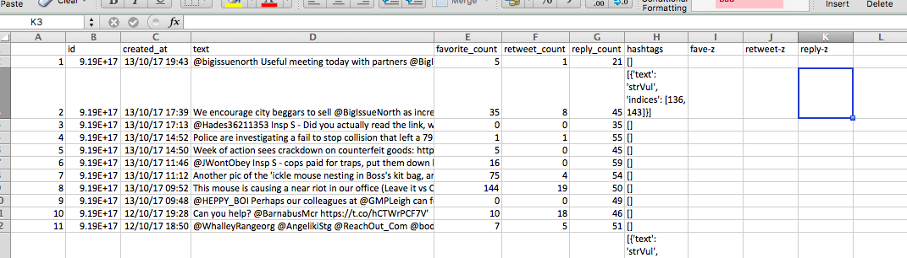
Now remember our equation. For each cell, we need to subtract the mean, and then from that divide by the standard deviation, for the appropriate column. So for us to make a z-score for favourites, we must for each number of favourites, subtract the mean number of favourites, and divide by the standard deviation number of favourites. Like so:
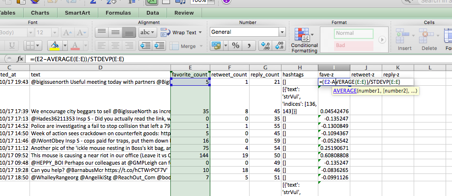
When you are done, you should have three columns for z-scores, one for favourites, one for retweets, and one for replies.
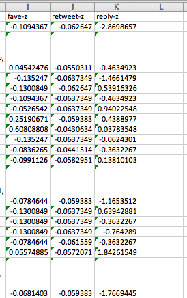
Now you can use these z-scores to calculate an average between them, which will give you your measure for your composite variable. To take the average of 3 values, you can just use the =AVERAGE() formula, and highlight the columns from which you want to use the values to calculate the average from, in this case the new z-score values you’ve just created:
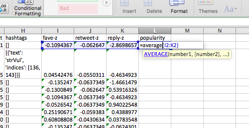
Now, finally, you have a popularity score, that tells you which tweets by GMP city centre were most popular, depending on the number of favourites, retweets, and replies, taking into account all these three dimensions that we decided are important indicators of our construct, popularity. Hint: sort your data using the sort option by the popularity variable, from largest to smallest (or in descending order).
So, based on this measure, which tweet is the most popular?
It appears that the most popular tweet GMP has made is a pun… :
“Several shoplifters detained today, including woman who stole a vibrator - Why do they do it - is it just for the buzz…’”
Very good GMP, very good. But something really interesting as well, if you look at a few of the tweets below, that show up as quite highly ranked based on our popularity score, it comes up as high on retweets, but earning 0 favourites! See:

This should illustrate the importance of measuring something as a construct. We could have conceptualised popularity of GMP’s tweets as an indirectly observable concept, which we could then operationalise as “number of favourites per tweet”. However, this would be a one-dimensional measure of our concept. Instead, by choosing to conceptualise popularity as a construct, made up of favourites, retweets, and replies, we create a composite variable, that reflects more the nuances of our concept.
In fact most of the things we study in the social sciences, and in criminology, are very complex social processes and often best represented by constructs, which can be measured this way through composite variables.
4.7 Composite variables created from categorical variables
Another thing to mention regarding measurement in social sciences, and criminology, is that often times our data come from surveys. And in surveys you don’t only deal with numeric variables, but indeed with categorical as well. And it is in these surveys that we can ask people some questions about the really nuanced and complex issues, such as trust in the police, or fear of crime. Of course the responses to such questions tend to be categorical, often ordinal, asking people to rank their agreement with various statements. So we should also take time to consider the other case, where your indicator variables that you wish to combine into a composite measure are categorical. These are most often made up of multi-item scales, which we’ll move on to in the next section.
Meaningful grouping is the nonstatistical combination of selected original variables based on the interpretation of the variables’ values or scores, guided by the science of the field. Meaningful grouping can be used to create a composite outcome variable from multiple continuous or categorical variables or both. These original variables, when combined into a composite, can indicate an attribute (e.g., high risk for mortality) that is meaningful. A composite variable created by meaningful grouping is often categorical. For example, a composite variable may include categories improved, no change, and worse to indicate the direction of overall change from baseline, to determine whether or not an intervention was efficacious. The key point is that the composite should be meaningful with respect to the context and purpose of the study and should be determined based on the science of the field, with a predefined algorithm.
Three common composite measures include:
- indexes - measures that summarize and rank specific observations, usually on the ordinal scale
- scales - advanced indexes whose observations are further transformed (scaled) due to their logical or empirical relationships
- typologies - measures that classify observations in terms of their attributes on multiple variables, usually on a nominal scale
Here we will consider scales for creating composite variables from numeric indicators, and indexes for creating composite variables from categorical indicators.
4.7.1 Multi-item scales for categorical constructs
A lot of criminological research uses multi-item scales to measure constructs. For example we saw in the paper earlier how the constructs of cooperation with the police or cooperation with the community were measured through asking various questions which were compiled together into these variables.
One primary technique for measuring concepts important for theory development is the use of multi-item scales. In many cases, single-item questions pertaining to a construct are not reliable and should not be used in drawing conclusions. There have been examination of the performance of single-item questions versus multi-item scaled in terms of reliability, and By comparing the reliability of a summated, multi-item scale versus a single-item question, the authors show how unreliable a single item is; and therefore it is not appropriate to make inferences based upon the analysis of single-item questions which are used in measuring a construct.
Oftentimes information gathered in the social sciences, including criminology, will make use of Likert-type scales. Rensis Likert was one of the researchers who worked in a systematized way with this type of variable. The Likert methodology is one of most used in many fields of social sciences, and even health sciences and medicine. When responding to a Likert item, respondents specify their level of agreement or disagreement on a symmetric agree-disagree scale for a series of statements. Thus, the range captures the intensity of their feelings for a given item.
You will have definitely seen Likert scales before, but you might have just not known they were called as such. Here is one example:

So in sum a Likert scale must have:
- a set of items, composed of approximately an equal number of favorable and unfavorable statements concerning the attitude object
- for each item, respondents select one of five responses: strongly agree, agree,
undecided, disagree, or strongly disagree.
- the specific responses to the items combined so that individuals with the most favorable attitudes will have the highest scores while individuals with the least favorable (or unfavorable) attitudes will have the lowest scores
After studies of reliability and analysis of different items, Rensis Likert suggested that attitude, behavior, or other variables measured could be a result of the sum of values of eligible items, which is something referred to as summated scales. While not all summated scales are created according to Likert’s specific procedures, all such scales share the basic logic associated with Likert scaling described in the steps above.
In general, constructs are best measured using multi-item scales. Since they are usually complex, they are not easily measured with a single item. Multi-item scales are usually more reliable and less prone to random measurement errors than single-item measures, as a single item often cannot discriminate between fine degrees of an attribute.
Creating multi-item scales is associated with test results for validity and reliability with respect to each scale are disclosed.
One important reason for constructing multi-item scales, as opposed to single-item measurements, is that the nature of the multiple items permits us to validate the consistency of the scales. For example, if all the items that belong to one multi-item scale are expected to be correlated and behave in a similar manner to each other, rogue items that do not reflect the investigator’s intended construct can be detected. With single items, validation possibilities are far more restricted.
Under most conditions typically encountered in practical applications, multi-item scales clearly outperform single items in terms of predictive validity. Only under very specific conditions do single items perform equally well as multi-item scales. Therefore, the use of single-item measures in empirical research should be approached with caution, and the use of such measures should be limited to special circumstances.
So how do you make one of these? Well you have to consider many factors, and consult both theory, and analysis in order to make sure that your measurement covers everything you need to be able to talk about the construct it is meant to represent. You need theory to identify the indicators of the construct, which you will need to include, as your items that make up the multi-item scale. So let us first consider the construct of feeling unsafe in one’s neighbourhood. We can conceptualise this as people feeling unsafe in their neighbourhoods in three separate settings. They can feel unsafe walking around in the daytime. They can feel unsafe walking around after dark. And they can also feel unsafe in their homes. We can consider a 3-item Likert scale, with responses that range from Very safe to Fairly safe to A bit unsafe to Very unsafe. This is the example we’ll use throughout this lab. So, download this data set from Blackboard (it’s under csew_small.xlsx). You can see that there are the three variables, of walking in day, walking after dark, and feeling safe in home alone. I have included responses from 10 people, so that we can use this to assess reliability and validity of the measures.
Multi-item scales open up a whole range of techniques for construct validity. For multi-item scales comprised of itemswith discrete response choices, reliability is most commonly assessed using Cronbach’s coefficient alpha, but I’m jumping ahead, we will now explore further the validity and reliability of measures, and how you can test this in the next section.
4.8 A note on Validity and Reliability
All measurements should satisfy basic properties if they are to be useful in helping researchers draw meaningful conclusions about the world around us. These are primarily validity, reliability, repeatability, sensitivity and responsiveness. We have, briefly, touched on reliability in the first session, and these two are the main concepts which we will cover today as well. but I wanted to mention the others as well, so that you have a complete picture of the expectations your variables need to be able to meet in order to be robust and reliable when used to describe the world of criminology.
Validation is the process of determining whether there are grounds for believing that the instrument measures what it is intended to measure. For example, to what extent is it reasonable to claim that a ‘fear of crime questionnaire’ really is assessing someone’s fear of crime? Since we are attempting to measure an ill-defined and unobservable construct, we can only infer that the instrument is valid in so far as it correlates with other observable behaviour. Validity can be sub-divided into:
- Content validity: is the measurement sensible? Do the indicators they reflect the intended construct?
- Criterion validity: is the measurement associated with the external criteria, for example other measurements of the same construct?
- Construct validity: what is the relationship of the indicators to one another? And to the construct it is intended to measure? Construct validity has two sub-types:
- convergent validity: extent to which indicators are associated with one-another (they measure the same thing)
- divergent validity: extent to which indicators differ (they measure distinct things)
Reliability and repeatability attempt to address the variability associated with the measure. You want to have a measure that repeatedly produces the same results when administered in the same circumstances, and that any differences in answers between people is the result of their differing attitudes on the construct which you are measuring, rather than due to any variation introduced by the measurement itself.
The below image might help you conceptualise reliability and validity. Reliability refers to getting consistent results each time you measure your concept. Validity refers to the extent to which your measurement of the concept actually reflects the concept itself.
Validity answers the question, “Am I measuring what I think I am?” In shooting terms, this is “accuracy.” My shots may or may not be loosely clustered, but they’re all relatively close to the bull’s-eye. Reliability answer the question, “Am I consistent?” In shooting terms, this is “precision.” My shots may or may not be relatively close to the bull’s-eye, but they’re tightly clustered. This leads us to four possible outcomes as illustrated below.
So you can have a reliable but not valid measure, or a valid but not reliable measure. Imagine it like this:

The worst-case scenario, when we have low validity and low reliability (lower left), looks like buckshot, scattered all over the target. We are neither accurate nor precise. We’re not measuring what we think we are, and at that even, we’re doing it inconsistently. When we have high validity but low reliability (upper left), our packing may be loose, but the shots are near the bull’s-eye. We are accurate but not precise. We’re likely measuring what we think we are, just not consistently. When we have high reliability but low validity (upper right), we may be off of the bull’s-eye, but our packing is tight. We are precise but not accurate. We’re not measuring what we think we are, but whatever we’re measuring, we’re doing so consistently. The best-case scenario, high validity and high reliability (lower right), is when the shots are clustered on the bull’s-eye. We are both accurate and precise. In other words, our question/variable consistently measures the intended concept.
Sensitivity is the ability of measurements to detect differences between people or groups of people. Your measurement approach should be sensitive enough to detect differences between people for example those who have differing levels of worry about crime.
Responsiveness is similar to sensitivity, but relates to the ability to detect changes when a person fluctuates in the construct being measured. If your measure is meant to detect change over time, for example in fear of crime, it needs to be able to detect changes. A sensitive measurement is usually, but not necessarily, also responsive to changes.
These are the main criteria that your measurements need to meet, in order to be considered robust. Pretty daunting, eh? No wonder secondary data analysis is so popular! (Is it though? Well it should be. It is amongst lazy people like myself, who would much rather acquire data and make pretty graphs, than design multi-scale items for measuring complex constructs in the first place….!) It is much nicer when someone has gone through the hard work of designing great measures for us, and we can use the excellent data provided. And also, we should appreciate the work that these people have put in. There are many initiatives to try to encourage the rest of us to use the data they’ve collected. Organisations such as the UK Data Service (UKDS) collate all sorts of data, and make them easily available and ready for us to use, to make these data more enticing. They also like to reward analysis of their data. For example, next year you will have the option to take a secondary data analysis pathway for your dissertation. If you do this, and you make use of a data set from the UKDS, you can enter to win the dissertation prize! It’s a pretty awesome thing to have on your CV, and it also comes with a cash prize of £500 for first place. Not bad…! And we have already had a BA Crim student win from Manchester before, so it’s definitely an attainable goal with your training and skills!
But as I was saying, building reliable and valid measurement is tough work. People at the Office of National Statistics work tirelessly to come up with multi-item scales to measure fear of crime, trust in the police, and similar constructs using the Crime Survey for England and Wales. For them to introduce a new construct, and some new questions takes, literally years of work. So it’s definitely a good approach to try to make use of the data which they collect. If you are interested, have a watch of this video on what sorts of data they have, and this other video on how to acquire data.
But if I’ve still not convinced you, and you want to go out and collect your own data, by taking the topics that you are interested in and conceptualising and operationalising them your way, and you want to develop your own multi-item scales, and then test their validity and reliability, well then, I guess I should equip you with some basic abilities to know how. You might get asked to create a questionnaire in your next workplace. While creating questionnaires is very tough and nuanced job, and I could write a whole course on only that, replying this to your line manager, when they ask you to build a survey will not win you many brownie points. Instead it’s best that you make at least some sort of attempt to ensure that your constructs are being measured by the most valid and reliable measures possible, or at least you can have some indication as to the error produced by your measurement. Later in this lab we will address this through something called Cronbach’s alpha. But first, let’s calculate a summative score for “feelings of unsafety”.
4.8.1 Activity 5: Calculating a summative score
So back to our data about collecting people’s feelings of unsafety, in their neighbourhoods. We have our three indicator questions:
- To what extent do you feel safe walking alone in the day?
- To what extent do you feel safe walking alone after dark?
- To what extent do you feel safe at home alone at night?
Well how can we tell if these measures are any good? One approach is to calculate Cronbach’s alpha. There is some debate around what this approach can tell you about your questions, but Cronbach’s alpha is used frequently as a measure in constructing a summary scale for Likert type questions or opinions. The Cronbach’s alpha gives a measure of the internal consistency or reliability of such a multi-item scale. It essentially considers the variation in one person’s answers between the many indicators of the construct. If they are all supposed to measure the same thing, then you should have little variation, and therefore get a high Cronbach’s alpha. If on the other hand you have high variation, and get a low Cronbach’s alpha, that might mean that your indicators are not so inter-linked as you had imagined, and perhaps measure distinct things, rather than elements of the same construct.
So let’s give it a go. Open up your data (csew_small.xlsx) and have a look at the answers people provide. Does it look consistent, from question to question? What are your initial thoughts?
Well now we can consider calculating the variation in answers, to be able to support (or challenge) your perceptions with data. But the first step to this is to re-code your variables from the text value (very worried, etc) to a number that indicates the rank of the ordinal response. How we do this is important. While the order of an ordinal variable is fixed, whether you go from high to low or low to high score is not. How do you determine what your score should be? Well on the first instance, I would suggest that you think about what your construct is. In this case, our construct is fear - or unsafety. In this case, it would make sense for a higher score to represent more fear. For the scores to reflect this, lower scores of worry should have lower numbers, and higher scores of worry should have higher numbers. So “very safe” should be equal to 1, and “very unsafe” should be equal to 4.
Once we’ve decided on a scoring system like this, we can write it down in a little table. This is both for ourselves, so we know what the numbers mean later (and maybe also for anyone else using our data afterwards), but also so that we can use this as a lookup table for our re-coding.
So create a mini table in your data, that has your codes and values. Something like this:

Now also create headings for 3 new columns, one for each of our indicator variables:
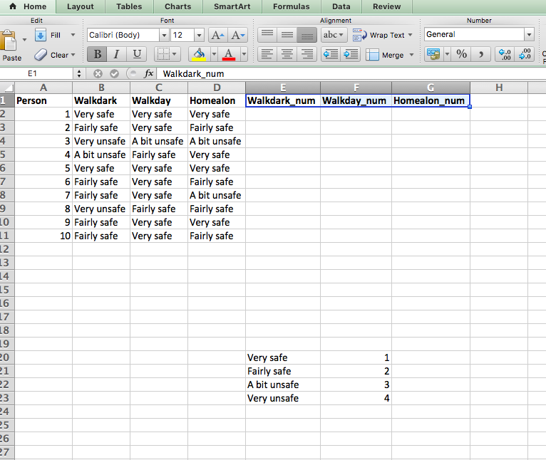
So now we can recode these variables into these new columns, where we will see the numeric value for each text value. We could do this manually. But we don’t want to. Remember we are lazy. And also remember that this is a very small subset of the actual Crime Survey for England and Wales (CSEW) data. The actual data has thousands of rows. 46,031 in the 2011/12 sweep to be exact. So that is not something that you would want to do manually, right? No.
Instead we will learn a new function in excel, one which you will often use, called VLOOKUP(). What this function does, is it uses a lookup table, in order to assign variables to a new column. In this case, our lookup table is the one on the bottom there, that we created, that tells excel that for us, Very safe is 1, and Fairly safe is 2, and A bit unsafe is 3, and Very unsafe is 4. We can use this, in order to create our new, re-coded variables.
The VLOOKUP() function takes 4 parameters. You have to tell it the lookup_value - the value to search for. This can be either a value (number, date or text) or a cell reference (reference to a cell containing a lookup value), or the value returned by some other Excel function. For example:
Look up for number: =VLOOKUP(40, A2:B15, 2) - the formula will search for the number 40.You then have to tell it the table_array - which is your lookup table, with two columns of data. The VLOOKUP function always searches for the lookup value in the first column of table_array. Your table_array may contain various values such as text, dates, numbers, or logical values. Values are case-insensitive, meaning that uppercase and lowercase text are treated as identical.
So, our formula =VLOOKUP(40, A2:B15,2) will search for "40" in cells A2 to A15 because A is the first column of the table_array A2:B15. You then have to tell it the col_index_num - the column number in table_array from which the value in the corresponding row should be returned. The left-most column in the specified table_array is 1, the second column is 2, the third column is 3, and so on. Well, now you can read the entire formula =VLOOKUP(40, A2:B15,2). The formula searches for “40” in cells A2 through A15 and returns a matching value from column B (because B is the 2nd column in the specified table_array A2:B15).
But finally, you still have to specify the range_lookup. This determines whether you are looking for an exact match (when you set to FALSE) or approximate match (when you set to TRUE or you omit it). This final parameter is optional but very important. In this case, we want an exact match, so we will set this parameter to “FALSE”.
So, to look up the value for the cell B2, in the lookup table that ranges from $E\(20:\)F$23 (remember to include dollar signs to make sure nothing changes when you copy an paste), find the values in the 2nd column of our lookup table, and return only exact matches, we can put the below formula into the first cell for our Walkdark_num variable:
=VLOOKUP(B2,$E$20:$F$23,2, FALSE)
To return this:

We can quickly verify that this looks right, since the value there in the ‘Walkdark’ column is “very safe”, we know that this should numerically return “1”. And it does, so we are happy. Now copy the formula down the column, and also repeat for the other two variables as well. You should finally end up with a table like this:

Now you have your numeric values for the indicators of the constrcut. As this is a summative score, it just means that the score is the result of the sum of the indicators. So to calculate the value for our composite variable, we need to calculate the total score people achieved, by summing their answers to all three questions. I can do this by creating a new “total” column, and populating it with the sums using the SUM() function:

And the values in this column represent the score that these people have on the composite variable “feelings of unsafety”. That’s it, now you’ve created this summative score. Woohoo! You can see that the person with the highest score has achieved a score of 10 - this is the hightest score on feeling unsafe in this mini sample. On the other hand, the person with the lowest score are actually two people who achieved a score of 3. They score low on feeling unsafe.
But to what extent do these measures all indicate the same concept? Is someone who feels the same towards their safety going to answer similarly on all onf these questions? We want to try to find this out, in order to be able to speak about the our measure confidently. And as mentioned earlier, you can put a number to the extent to which you can rely on your measures, using Cronbach alpha.
4.8.2 Activity 6: Testing your questions: Cronbach’s alpha
Cronbach’s alpha is a measure of internal consistency, that is, how closely related a set of items are as a group. It is considered to be a measure of scale reliability. Cronbach’s alpha is a measure used to assess the reliability, or internal consistency, of a set of scale or test items. In other words, the reliability of any given measurement refers to the extent to which it is a consistent measure of a concept, and Cronbach’s alpha is one way of measuring the strength of that consistency.
Cronbach’s alpha can be written as a function of the number of test items and the average inter-correlation among the items.
(number of items/(number of items-1))*(1 - the variance associated with each item/ the variance associated with the observed total scores)
With this in mind, we can apply this formula to excel, and use excel to calculate our Cronbach alpha. As I mentioned, Cronbach alpha has to do with variance across the different indicators for the same construct, in this case the three questions about feeling unsafe, within each individual person’s answers. Remember that each row is one person, so in each row you have the answers to the questions from the same individual.
So to do this, you first need some values:

I’ll go through each of these but, k is the number of indicators, sigma (sum of) theta^2 is the sum of the variance between people’s answers, and theta^2 is the population variance. Alpha is the end result, that you’re calculating.
So you need:
- the number of indicators,
- the sum of variance, and
- the population variance.
The last value in there is the alpha, which we obtain at the end.
So, in cell B19, I put the count of the number of indicators for this construct. As I know there are three, I could simply write in “3”. If you want, you can use the COUNTA() function as above. It just counts the number of cells with text in them. But since you’re highlighting them anyway, it’s not much of a time saver. Unless you had a construct with many many many indicators. I guess then it would save some time. But honestly, you should always know how many indicators your construct has, as it should be based in theory and your expert domain knowledge…!
Now the next one is a bit more complex. In order to get the sum of the variance for each question, I will need first to calculate the variance for each question. Let’s use the VARP() function to do this. I can place these values as the bottom row to my data. Like so:

Repeat these for the other two columns as well. Now I have my variance for each indicator question, and I can add them up using the SUM() function, in the cell B20:
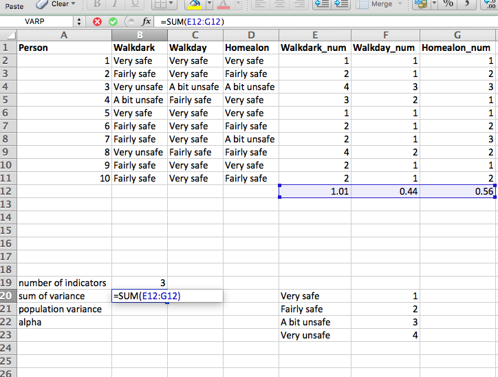
Now finally I need the variance between the total scores, between the people. For this, in cell B21 you just have to calculate the variance of these values, again using the VARP() function:
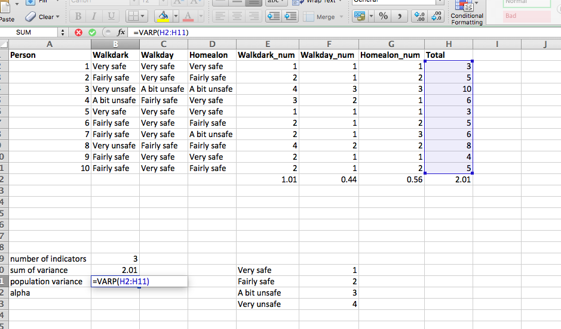
So now you have absolutely everything to calculate your Cronbach alpha. All you have to do, is calculate it using the values for number of indicators, variation within people in their answers to the indicators, and variation between people to their answers to the indicators. And you do this with the following formula:
=B19/(B19-1)*(1-B20/B21)
Like so:

So that leaves us a value of 0.79. So what does this mean? Well it’s a value between 0 and 1, so obviously 0 is the absolute words, and 1 is the perfect score. But what sorts of scores are realistic? Well it depends on the concept you’re measuring most likely. But in terms of acceptable thresholds, here is some guidance:

Our value is acceptable, and so we can rest assured, that these three indicators all tap in to a relatively similar thing, and we can use this result as our justification for bringing them together as multi-item indicators for feeling unsafe in one’s neighbourhood.
Yay!
A note of caution though. There are some issues with Cronbach alphas. For example, you might see quite high scored for scales with lots and lots of question items. As one increases the numbers of items in a scale, it is more likely that the alpha will be high, but score may be meaningless because it does not represent an underlying construct or worse - it represents multiple underlying constructs. Cronbach’s Alpha measures only the reliability of scale of measurement of responses of the cases, in a Likert Scale. But it does not measure the reliability of the respondents’ opinion leading to the latent construct. In that case, useful measurements are those of validity. Usually, for the sake of the integrity of the research, it is recommended that the researcher run a series of tests to test reliability and validity of questionnaires. While the Cronbach’s alpha is one of these tests, further tests include principle components analysis, factor analysis, and other indicators. Having an integrated set of tests adds more to the value of the research in question. If you are interested, you can read up a bit more detail on validation here. But that is not something that we will worry about now, instead we can move on to the final part of the day, recoding.
4.9 Recoding some more: Transforming your variables to fit with your concepts
Transforms are transformations on variables. One purpose of transforms is to make statistical operations on variables appropriate and meaningful. Another is to create new variables, aggregates, or other types of summaries.
- Leland Wilkinson (2005) The Grammar of Graphics
So we’ve already covered some re-coding of our variables, transforming them from text values into their rank orders, as they sit in the ordinal variable above, using the VLOOKUP() function. The last thing we’ll cover today is addressing re-coding of the second variety mentioned above by Leland Wilkindon, when you want to create aggregate summaries of a variable. You might want to do this if you want to turn a numeric variable into a categorical variable for example, or when you want to turn a categorical variable with many possible values into a binary variable, a variable with only two possible values.
Let’s start with the second option, because I can demonstrate this on our fear of crime table, that you should still have open, after having just finished calculating your Cronbach’s alpha. Let’s say that we no longer care about the distinction between all 4 types of worry, and instead wanted to only distinguish between those who are worried or not worried. We only want 2 possible categories. How can we achieve this?
Well one option is to use the VLOOKUP() function again. Create another lookup table, but this time, change the column that contains the items to change the values into from numbers, to the corresponding text values. Like so:
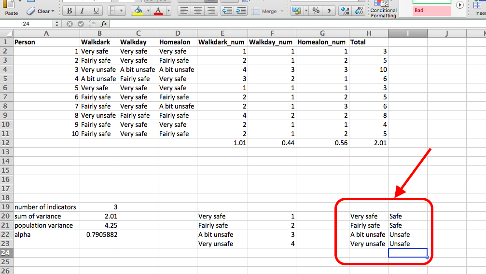
And then create a column for your new variable, for Walkdark_binary. Now in this new column, use the VLOOKUP() function to change the values to the corresponding binary options. Can you guess what the function will look like, based on what the function looked like above, when translating to the numbers?
Remember you have to specify: - what you want to reference - your lookup table - the number for the column where your new values are - that you want exact matches
So, got your formula yet? Well if not, I’ll help you. It’s this:
=VLOOKUP(B2,H20:I23,2,FALSE)
Like so:

Of course, remember to add your dollar signs if you want to copy and paste that formula:

The result should be a new, binary variable, that re-coded your 4 possible values for the walkdark variable into 2: safe/ unsafe. Like so:

Now the last task is to re-code your numeric variables, into categorical. You may remember from the first week’s reading that you can always go up the resolution, but not down, for levels of measurement for variables. This means that you can change a numeric variable into categorical, but you can’t change categorical into numeric. Just remember this!
4.9.1 Activity 7: Recoding Variables
OK so final thing, to turn a numeric variable into a categorical, go back to your data of people’s heights. Let’s say we don’t want any sophisticated analysis with numbers, we just want to know whether people are short or they are tall. We will decide this, by checking whether they are taller than the group average, or shorter than the group average.
To achieve this, we will return to our trusty IF() function. So open up the data set with the heights again, and create a new column, for a new variable called tall_or_short:
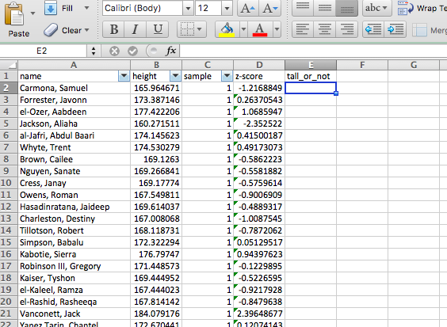
Great, now this column, we want to populate with the word “Tall” if the person is taller than average and “Short” if they are not. So what are the elements of our statement? We need to check if the person height is greater than the average height and if it is, type “Tall”, else type “Short”.
So we know that the IF() function takes 3 arguments. 1st the logical statement, that has to be either true or false. In this case, that statement will test whether person height is greater than the average height. This would look something like this: cell value > average(column).
In the example of our first person, Samuel Carmona, that would be the value of the cell B2, being checked against the average for the whole column (B:B). So this part of the statement would look like:
B2 > AVERAGE(B:B)
Then the other 2 values that the IF() function needs is what to do if the statement is true, and what to do if the statement is false. These are simple. If true, write “Tall”, and if false then write “Short”.
So altogether, your function will look like this:
=IF(B2>AVERAGE(B:B),"Tall","Short")
Like so:

And finally, copy and paste for your whole column, and you will have a range of values of tall and short. Since we used the average as our divider, there should be about as many tall people as short people. You can quickly make a pivot table to see if this is the case:
You can see that we are close enough:

What could we do to split our data exactly in half? Well I’ll leave this question as extra credit. Raise your hand and tell one of us what the solution is, and we’ll come up with some reward.
4.10 Summary
In sum, you should now be able to begin to think about the concepts you wish to study, and the way in which you can turn them into data to be collected, to allow you to talk about htese concepts. You should be able to discuss composite variables, and talk about validity and reliability of measures and research. You should be comfortable with the following terms:
- conceptualisation
- measurement
- empirical data
- directly measurable concept
- indirectly measurable concept
- construct
- composite variables
- multi-item scale
- single-item scale
- summated scale
- Likert scale
- population
- sample
- sample statistics
- population parameters
- z-score
- degrees of freedom
- law of large numbers
- central limit theorem
- VLOOKUP()
- reliability
- validity
- Cronbach’s alpha
- re-coding variables
- binary variable
#Sources - Analysis of variables that are not directly observable: influence on decision-making during the research process - Composite Variables: When and How - Scores and measurements: validity, reliability, sensitivity